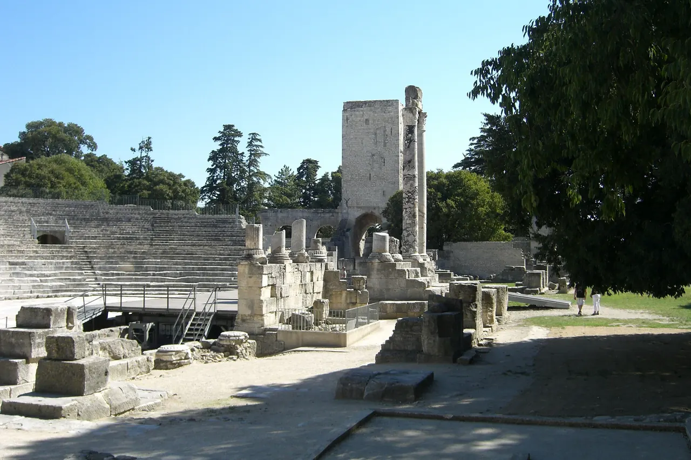

{kind=link}
관광·미술관
Nous avons déjà des billets.
이미 표가 있습니다.
누 자봉 데자 데 비예

인접한 원형경기장(Arènes)보다 약 100년 앞선 기원전 12년경, 아우구스투스 황제 시대에 건립된 갈리아 최초의 석조 로마 극장(유네스코 세계유산)이다.
피 흘리는 맹수 사냥과 검투사 시합이 열리던 원형투기장(Amphitheatre)과 달리, 이곳은 그리스 비극과 희극, 판토마임, 시 낭송이 펼쳐지던 시민 교양과 예술의 무대(Theatre)였다.
중세 기독교 시대에 '이교도의 음란한 오락 시설'로 낙인찍혀 파괴되고 채석장으로 전락하면서 대부분의 좌석과 기둥이 뜯겨 나갔으나, 100여 개의 대리석 기둥 중 홀로 무대를 지키고 선 두 개의 코린트식 기둥 '두 과부(Les Deux Veuves)'와 고요한 잔디밭이 서정적인 폐허의 미학을 전한다.
"원형경기장의 거대한 석조 질량감과 극명하게 대비되는, 우아하고 서정적인 고대 극장의 잔영을 감상하는 공간이다." 반원형 오케스트라 석판 위에 서서 무대 중앙의 두 과부 기둥과 뒤편 성당 종탑의 겹침을 바라보고, 정원 잔디밭에 흩어진 고대 대리석 조각들 사이를 30~45분간 산책하기에 최적이다.
| 운영시간 | 재확인 |
|---|---|
| 휴무 | 재확인 |
| 예약 | 재확인 |
| 소요시간 | 45분 재확인 |
| 구분 | Théâtre Antique (고대 극장) | Arènes (원형경기장) |
|---|---|---|
| 건립 시기 | 기원전 12년 (아우구스투스) | 서기 90년 (도미티아누스) |
| 형태 | 반원형 (D자형) | 완전한 타원형 (O자형) |
| 주요 기능 | 비극, 희극, 음악, 시 낭송, 종교 의식 | 검투사 결투, 맹수 사냥, 전차 경주 |
| 음향/무대 | 무대 뒤 높은 벽(Scaenae frons)으로 소리 반사 | 360도 전방위 관람 시야 확보 |
| 항목 | 상세 정보 |
|---|---|
| 위치 | Rue du Cloître, 13200 Arles |
| 운영 시간 | 매일 09:00–19:00 (동절기 17:00까지, 마지막 입장 30분 전) |
| 입장료 | 단독 성인 €5.00 / Pass Monument Avantage (€13.00, 강력 권장) 이용 시 원형경기장과 함께 입장 |
| 동선 연계 | Arènes(원형경기장) 서쪽 출구에서 도보 2분 거리로 두 유적을 하나의 블록으로 묶어 관람 (에너지 배분은 경기장 7 : 극장 3) |
| 사진 팁 | 무대 중앙에서 객석 쪽을 바라보면 고대 로마 유적과 뒤편 생트로핌 성당의 중세 종탑이 한 프레임에 잡힘 |
Nous avons déjà des billets.
이미 표가 있습니다.
누 자봉 데자 데 비예
On peut prendre des photos ?
사진 찍어도 되나요?
옹 푀 프랑드르 데 포토
Où commence la visite ?
관람은 어디서 시작하나요?
우 코망스 라 비지트

높이 15m 거대한 지하 백색 석회암 채석장 동굴 전체를 디지털 캔버스로 변모시킨 세계 최초·최대 규모의 몰입형 미디어 아트 공간. 7,000㎡ 암벽과 바닥을 감싸는 빛과 음악의 향연.

기원전 6세기 켈트 성소에서 헬레니즘 도시를 거쳐 로마 제국의 온천 휴양도시로 번영했던 거대한 고대 발굴 유적지. 갈리아에서 가장 완벽하게 보존된 기원전 1세기 로마 영묘와 개선문 '레 장티크(Les Antiques)'.

알피유(Alpilles) 산맥 해발 245m 석회암 절벽 위에 우뚝 솟은 중세 독수리 요새 마을. 자연 암반과 성벽이 하나로 결합된 레보 성채(Château des Baux) 폐허와 올리브 계곡 대파노라마.

세계적인 식물학자 파트리크 블랑의 300㎡ 거대한 수직 정원(Mur Végétal) 외벽 아래 40여 개 프로방스 전통 식재료 좌판이 모인 아비뇽의 활기찬 실내 중앙 미식 시장.

14세기 가톨릭 교황청이 로마를 떠나 68년간 머물렀던 서유럽 최대의 중세 고딕 요새 궁전. 베네딕토 12세의 구궁전과 클레멘스 6세의 신궁전, 마테오 조바네티의 프레스코화와 히스토패드 3D 증강현실 복원.

12세기 론(Rhône) 강을 건너 교황령 아비뇽과 프랑스 왕국을 잇던 920m의 유일한 석조 다리. 소빙하기의 거센 홍수로 22개 아치 중 4개와 2층 생니콜라 예배당만 남은 유네스코 세계유산.